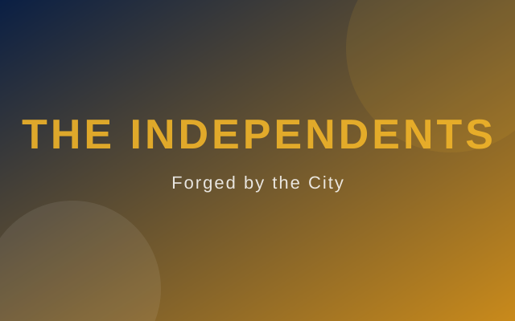

The story of a club built by the people, for the people.

Independent Football Club was founded in 1978 by a group of dock workers, factory hands and shopkeepers who wanted a team that truly belonged to the community.
Refusing the patronage of wealthy owners, the founders took the club's name literally — independent. Every share, every vote and every decision would stay in the hands of the supporters. It was a radical idea then, and it remains our greatest pride today.
From a dusty patch of municipal land, to the roaring terraces of Independence Park, the club has grown into the heartbeat of the city — a place where generations of families have grown up in navy and gold.
Our crest tells the story of the club at a glance.

3×
1985 · 1994 · 2011
2×
2001 · 2018
2×
1995 · 2012
7×
1980–2019
4×
2008 · 2013 · 2019 · 2025
5×
2010 · 2015 · 2018 · 2021 · 2024